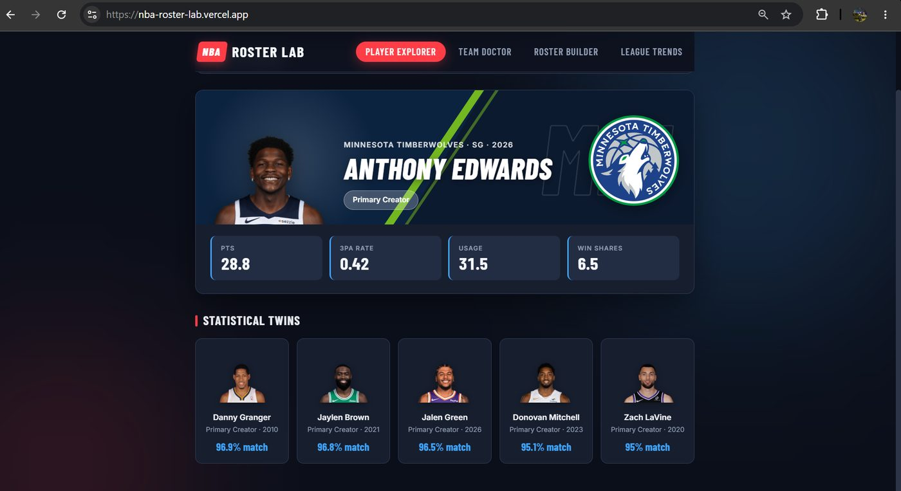
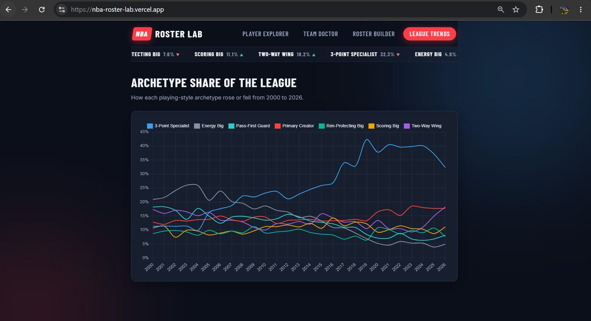
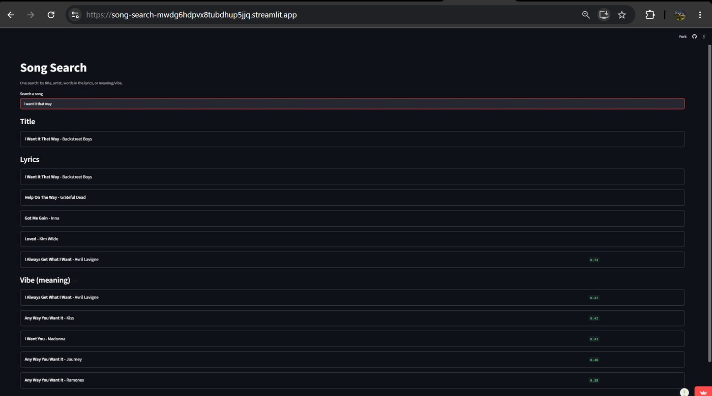
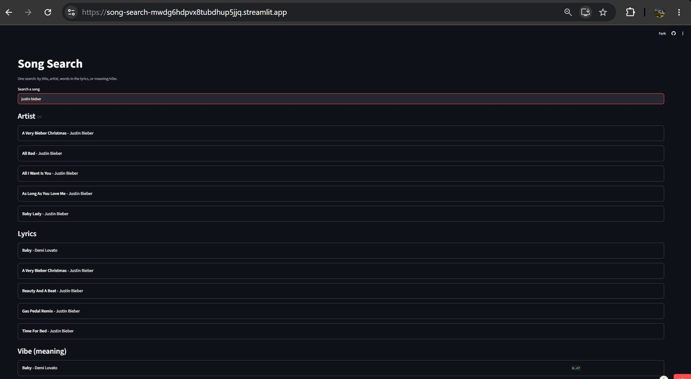
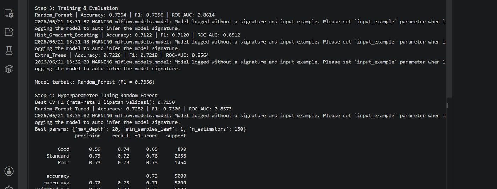
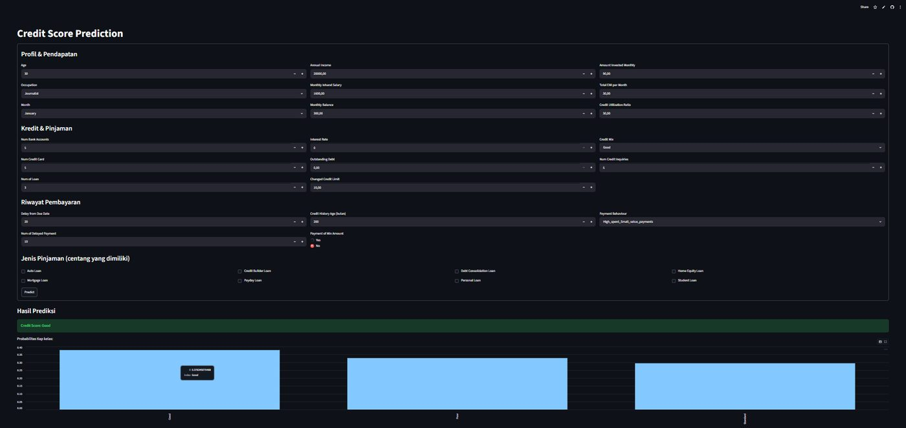
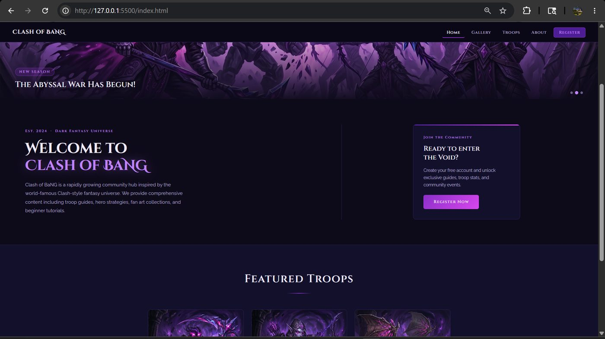
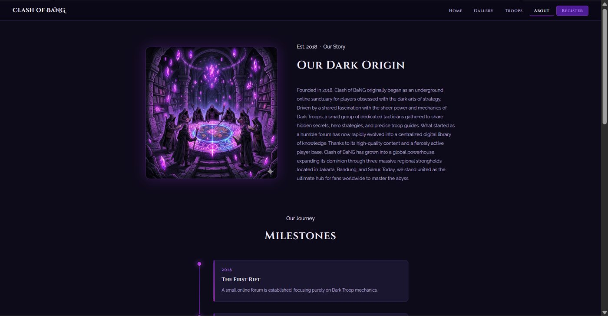

Data Science Student, Bina Nusantara University
Jonathan Andrew Saleh
Four projects, each one shipped as something a person can open and use, not a notebook. Machine learning deployed to AWS, a search engine that runs four retrieval methods at once, unsupervised clustering over twenty six seasons of NBA data, and an interface built from a design system up.
- 3.71GPA out of 4.00
- 4projects, all deployed
- 15thAI Innovation Challenge, COMPFEST 18
NBA Roster Lab
Unsupervised machine learning that groups every NBA player from 2000 to 2026 into seven playing style archetypes, then uses those archetypes to find similar players and check how well a team is built.
- Self-initiated
- Individual project
- Python
- scikit-learn
- HTML/CSS/JS


Why I built it
I have a passion for basketball. As a kid I played a lot of NBA 2K and I loved building my own roster. Watching the real NBA over the years, I noticed the game has changed a lot. The five traditional positions do not really describe how players play anymore. So I decided to let the data decide the roles instead.
What I built
K-means clustering on about 9,900 player seasons from 2000 to 2026, using eight rate based style features. It gave me seven archetypes: Two-Way Wing, 3-Point Specialist, Pass-First Guard, Primary Creator, Rim-Protecting Big, Scoring Big and Energy Big.
On top of that I built four tools. Player Explorer finds statistical twins, Team Doctor compares a roster against teams that won 55 games or more in the same era, and Roster Builder and League Trends do the rest. It runs as a Streamlit app and also as a custom web front end coded into HTML, CSS and JS.
Impact
The decision that was crucial for this project was leaving Win Shares out of the clustering features. Had I left it in, the clusters would have grouped players by how good they are, not by playing style. The goal is to help GMs find cheaper alternatives to the players they want, like "a poor man's LeBron". NBA teams work under a salary cap, so they cannot spend everything on stars and still build a balanced roster.
What I learned
K-means puts seven center points, measures which one each player is closest to using Euclidean distance, then moves each center to the average of the players assigned to it and repeats until the centers stop moving. Because it works on distance, I had to standardize the features first. I also used rate stats instead of counting stats, because every player plays a different amount of minutes and rate stats make a bench player comparable to a starter.
Picking k was harder than I expected. The elbow curve had no sharp bend, and the silhouette score was actually highest at k=2. But k=2 only splits the league into big men and small men, which is useless to me. Neither metric decided it, because playing style is a continuum and not a set of separate groups. So I took seven out of the 6 to 8 range that was left, then checked it by hand. Rim protectors landed with Gobert and creators landed with Luka.
Song Search
A search engine over 57,650 songs that runs four search methods on every query from one search bar, then groups the results by how each one was found.
- Self-initiated
- Individual project
- Python
- Sentence embeddings
- TF-IDF


Why I built it
I have always been intrigued by how Spotify's search bar works. When you search a song it does not just show the song with that exact title. The result can also come from a line in the lyrics, or from the artist, or from something closer to a mood. I wanted to see how much of that I could rebuild using only titles, artist names and lyrics.
What I built
| Section | Method |
|---|---|
| Title | Substring, with fuzzy fallback for typos |
| Artist | Fuzzy matching across 643 names |
| Lyrics | Phrase match first, then TF-IDF ranking |
| Vibe | Sentence embeddings, cosine similarity |
Each method fits a different way people search. Encoding all 57,650 songs is the only slow part, so it runs once and gets saved to disk. Everything else is cheap enough to run on every query.
Impact
Instead of making the user pick a search mode, I run all four methods on every query and hide the sections that return nothing, so the user doesn't have to decide which category their search belongs to.
What I learned
TF-IDF gives a high weight to words that show up a lot in one song but rarely in the other 57,000, and that is what decides which lyric results come first. Fuzzy matching counts how many letters you have to change to turn one word into another, so it still finds "adelle" when the artist is Adele. I picked the cutoff of 75 by testing it on a labeled test set instead of guessing. Sentence embeddings turn each song into 384 numbers that represent the meaning of the lyrics, and that is the part that can match "heartbreak on a rainy night" to songs that never use those words. There is no single best search method here. Each one is good at a different thing, which is why I used four.
Credit Score Classification
An end to end machine learning pipeline that sorts customers into three credit score classes. I built and deployed it three ways, locally, on Streamlit Community Cloud and on AWS, to see what actually changes when a model leaves my laptop.
- Class assignment
- Individual project
- Python
- scikit-learn
- MLflow
- AWS


What I built
The dataset is messy on purpose. About 100,000 rows where numbers are stored as text, junk tokens instead of missing values, some ages over 100, and one column that packs several loan types into a single cell. I cleaned it without dropping rows. Impossible values became missing, outliers got capped at realistic limits, and the loan column was split into eight binary features.
I compared Random Forest, Hist Gradient Boosting and Extra Trees, tuned the best one with grid search, and tracked every run in MLflow. The tuned Random Forest got a weighted F1 of 0.73.
How I tested it
Instead of only reporting a score, I made three input scenarios to push the model into each class. Zero outstanding debt and a good credit mix for Good, the form defaults for Standard, and a very high debt value for Poor. I used outstanding debt as the lever because it had the highest feature importance, so it was the input most likely to change the prediction. That showed me something a single accuracy number would have hidden, which is how the model behaves at the edge of its input range and not just on average.
Impact
I chose weighted F1 instead of accuracy as the main metric, because the three classes are imbalanced and accuracy would have hidden how badly the model handled the smallest class.
What I learned
Because of this project I now understand that deploying a model can be done both locally and through the cloud, and both have their advantages. Local is much quicker to set up and the app launches fast, but the reach is limited to my own machine. The cloud needs more effort, like IAM roles and security groups and a real bill, but it scales and the endpoint keeps running even when the server in front of it restarts.
Clash of BaNG
A five page dark fantasy community site. I designed it in Figma first, then coded it into HTML, CSS and JS with no framework and no tables for layout.
- Class assignment
- Individual project
- Figma
- HTML
- CSS
- JavaScript


What I built
Five pages: home, gallery, troops, about and register. Each one has its own header, navigation, content and footer. The layout is pure CSS box positioning with Flexbox and Grid, all the styling sits in external stylesheets, and I did not use tables for layout.
The interactions were the fun part. A lightbox modal for the gallery, cards that show troop stats when you hover or tap, a register form that checks every field and tells you what is wrong, and a nav bar that turns into a hamburger menu on small screens.
Designing before building
The brief asked for a Figma prototype first, so I built the whole design system there. Color styles, text styles, effects, reusable components and interactive variants, plus a clickable flow between all five pages. Then I gave the coded site a different structure from the prototype on purpose, but kept the same visual language. That turned out to be a better test of the design system than copying the prototype would have been.
Impact
I designed all five pages in Figma first, using reusable components and variants, before writing any code. That is why the colors, type and spacing stayed consistent across every page instead of drifting while I built them.
What I learned
This project taught me that interface work is its own skill, and not something you add at the end to make things look nice. Deciding the type scale and the color system before coding removed a lot of small decisions later. It is also the reason the NBA project in this portfolio has its own custom front end instead of only a Streamlit app.
Get in touch
Feel free to reach out about internship opportunities, or anything you saw in this portfolio. Email or WhatsApp both reach me quickly, and my CV has the full detail.